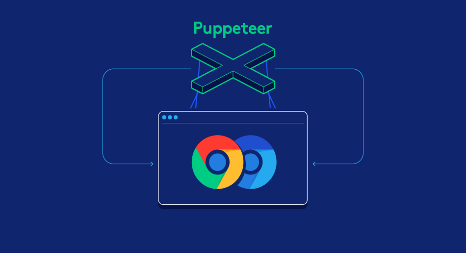
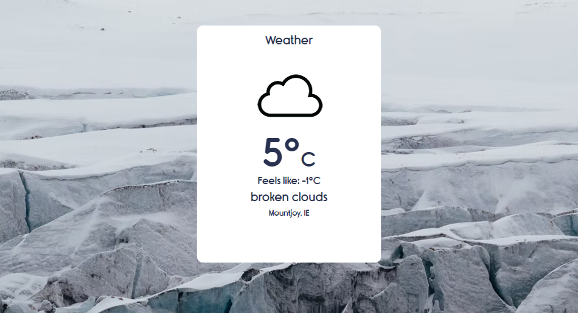
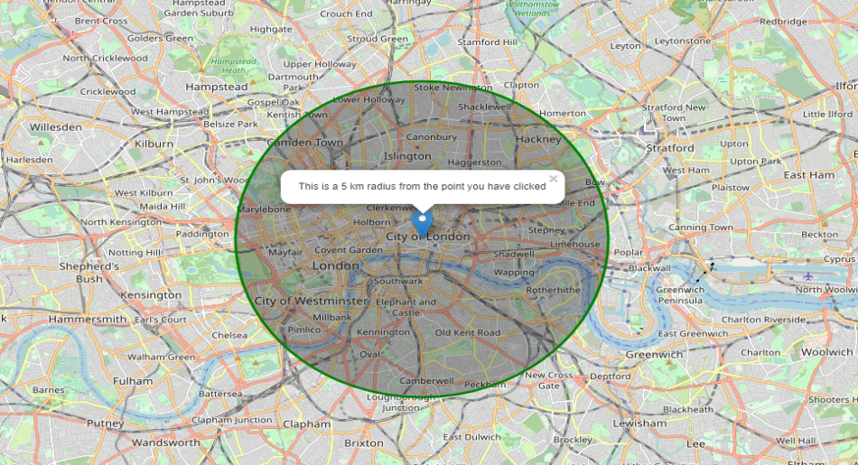

Twitter Bot
This is a Puppeteer node.js project that Tweets automaticly

Weather Webapp
Weather app written in JavaScript using www.OpenWeatherMap.org API and geolocation if avaliable on the device.

How far...
This is a small project to allow user to see the radius of 5 km from location selected on the map. Project is using Open Street Map API.